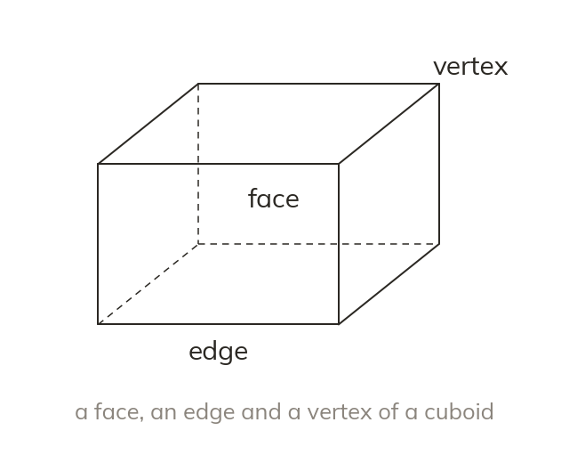

Faces, edges and vertices
A face is a flat surface. An edge is where two faces meet. A vertex is where edges meet.
A face is a flat surface, an edge is where two faces meet, and a vertex is where edges meet. Dashed lines show the edges hidden at the back.